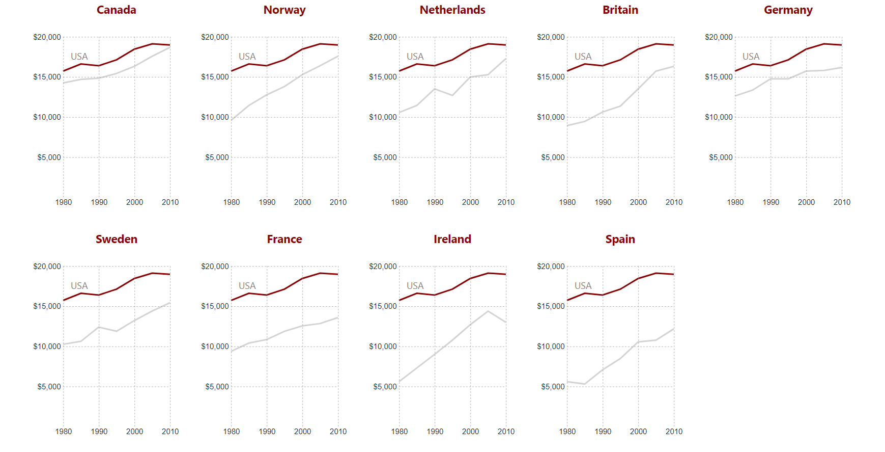

Small multiples
Using d3.js and JavaScript to make small multiples. These charts were created during the Lede Program for ‘Storytelling with Data’ with Jonathan Soma. View code
Comparing fertility in the US and Japan from 1945-2014

Showing US middle class income compared to different European countries since 1980
